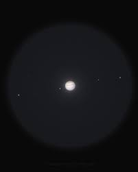
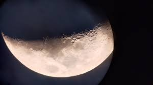

Orion Nebula
Faint gray cloud. Not colorful like photos.

10mm lens
Small bright disk with cloud bands. 2–4 moons visible.

10mm lens
Very detailed surface, craters clearly visible.

10mm lens
Faint gray cloud. Not colorful like photos.
10mm lens